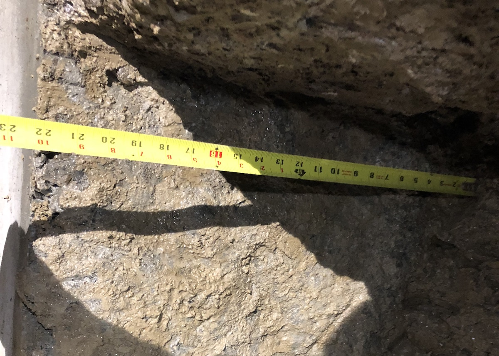

Underpinning is a construction method used to modify an existing foundation . Usually, this is to gain more height in an existing basement, however , it may also be required to strengthen a weakened or damaged footing . Generally, underpinning requires excavating sections from under a footing in a pre-determined sequence and size . Concrete is then poured and formed into the pockets , virtually extending the footings deeper , as specifiyed by an engineer .
